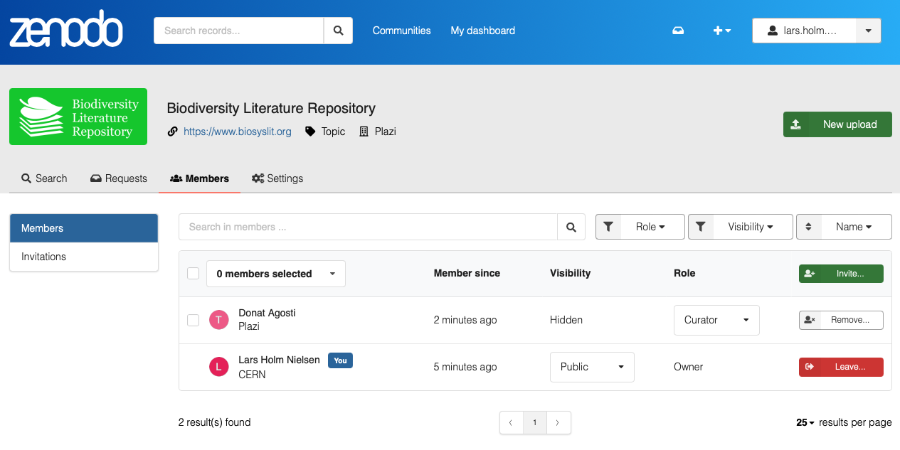

Zenodo
Zenodo is an open-access repository developed by CERN, allowing researchers from any discipline to upload, share, and archive research data, software, publications, and more. It is a key tool for ensuring the long-term preservation and discoverability of research outputs.
What You Can Do with Zenodo
Upload and Share
Easily upload any type of file, including datasets, software, and publications, and get a DOI for easy citation.
Discover Research
Search and access a vast collection of open-access research outputs from a wide range of fields.
Long-Term Archiving
Benefit from reliable long-term preservation, ensuring your research remains accessible for future generations.
Software Integration
Zenodo integrates with GitHub, automatically archiving your releases and assigning a DOI for each version.
Key Features
Digital Object Identifiers (DOIs)
Zenodo automatically mints a DOI for every public deposit, making your research outputs citable and easily traceable.
Open and Secure
Built on a secure and trusted infrastructure by CERN, Zenodo ensures your data is safely stored and openly accessible.
Community Support
Zenodo supports various communities and collaborations, providing a platform for group-specific data management.

Ready to get started?
Use Zenodo to publish your research outputs and contribute to open science.
Create an account